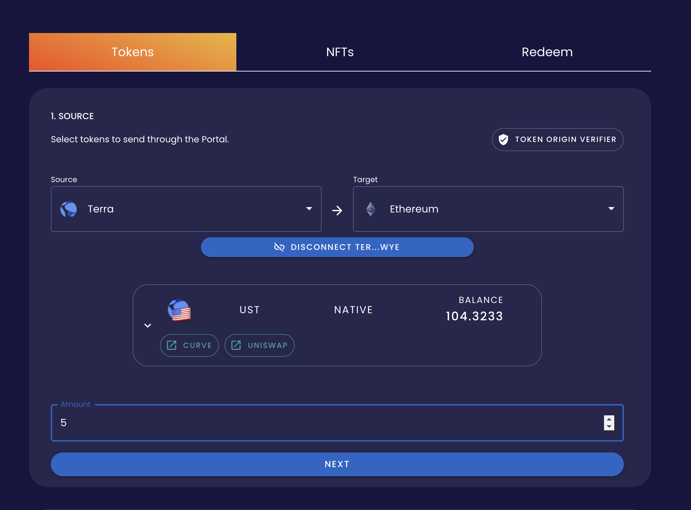
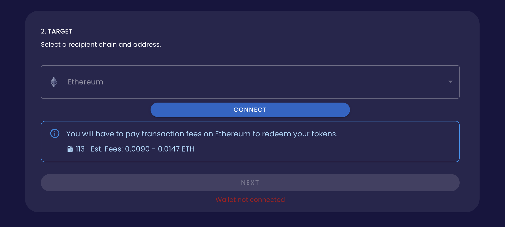
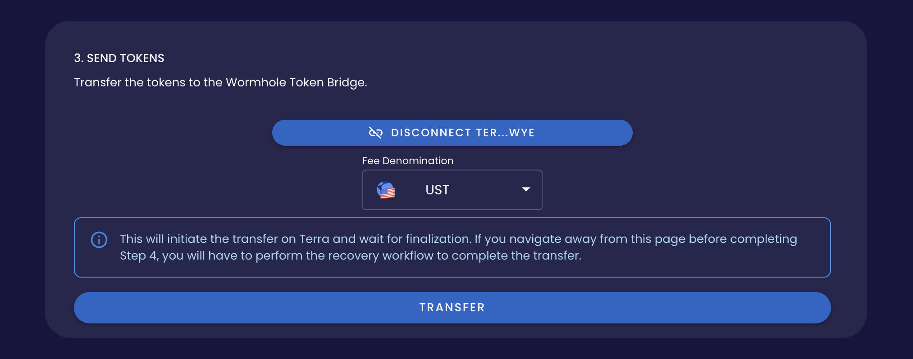

Wormhole Bridge tutorial#
Wormhole’s Portal Bridge allows you to bridge tokens across different chains. Instead of swapping or converting assets directly, Wormhole locks your source assets in a smart contract and mints new Wormhole-wrapped assets on the target chain. You can then swap Wormhole-wrapped assets on an exchange for other assets on the target chain.
Use this tutorial to bridge your assets between Terra and other chains using Wormhole.
Prerequisites#
The Terra Station browser extension for tokens on the Terra blockchain.
A wallet on the chain you want to bridge.
Paying for fees
Be sure to have enough tokens in your wallets to pay for fees. Remember that fees will be charged for sending and redeeming tokens.
Bridge tokens#
Visit Wormhole’s Portal Token Bridge to get started.
1. Source#
Select a Source chain and a Target chain from the dropdown choices.
Click Connect to connect your Terra Station wallet. Allow the connection if your wallet extension prompts you.
Click Select a token and choose from the available tokens in your wallet.
Important
You should always check for markets and liquidity before sending tokens. Click here to see available markets for wrapped tokens.
Enter the amount you want to bridge and click Next.
2. Target#
Connect your target chain wallet by clicking Connect. Allow the connection if your wallet extension prompts you.
Important
Make sure your target wallet has tokens to pay fees in to redeem your tokens.
Click Next.
3. Send tokens#
Select a denomination to pay fees in.
Click Transfer.
When prompted, click Confirm to confirm the transfer.
Follow the steps in your wallet’s browser extension to complete the transaction.
Your tokens will be sent to the Wormhole contract and you will receive Wormhole-wrapped tokens. These tokens can be traded on an exchange for native assets. Click here to see available markets for wrapped tokens.
4. Redeem tokens#
After your tokens have been sent, you can receive them on the target chain by clicking Redeem.
Confirm the redemption in your wallet extension.
Now that you have wrapped tokens in your wallet, you can trade them on an exchange for native assets. Click here to see available markets for wrapped tokens.
Congratulations! You have just used Wormhole’s Portal Token Bridge. For more information, visit the official Wormhole docs.